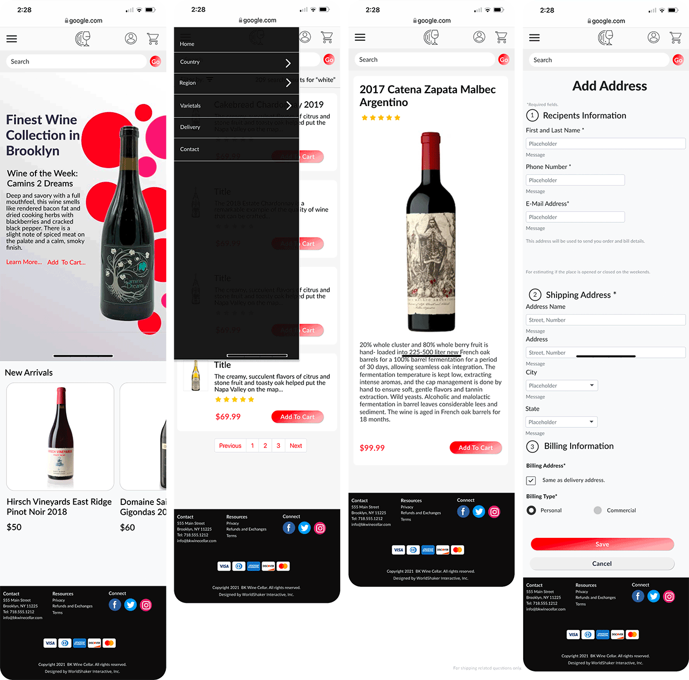
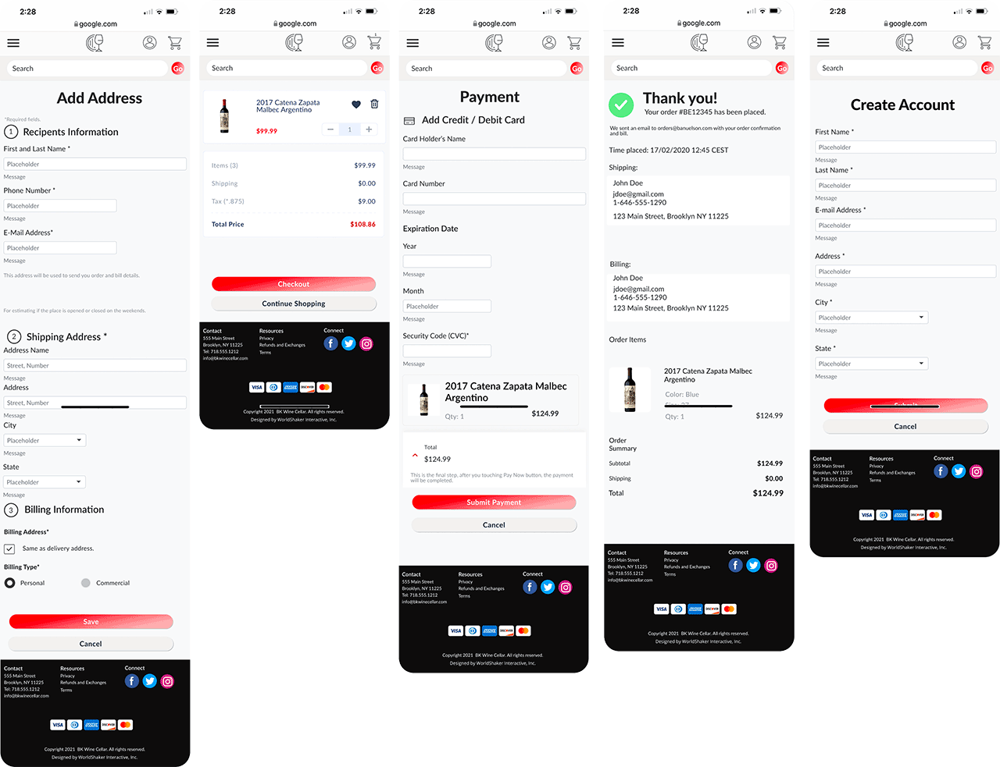

Overview
BK Wine Cellar is a local wine store in Brooklyn (BK) that does not have a well designed e-commerce website for its customers to be able to view its wine collection, and order wine for delivery.
The Team & Timeframe
Robert Harris is the UX Researcher, Information Architect, and Visual Designer. The project time frame was a 2 week sprint.
Tools & Methods Used
- Closed card-sorting
- Contextual Inquiry
- Competitive & Comparative Analysis
- Miro
- Figma
- Adobe CC
Problem
BK Wine Cellar's Needs a Well Designed Website
Local wine lovers want to be able to search the site – bkwinecellar.com - by region, categories and varietals so that they can easily find and purchase their favorite wine/s and have it delivered.
Solution Overview
How might we...?
How Wight We Design an E-Commerce Website for BK Wine Cellar's customer?
The challenge was to design and build a user-centered website for BK Wine Cellar that organized the wines in proper categories and provided navigation and search for the user to be able to easily find and purchase wines and have them delivered.Approach
Let's Get Together and Order Wine
My journey of discovery began on Easter Sunday, April 2021, where I organized a dinner party with a group of women ranging in age from 30-45. My first insight was that all of the women ordered their wine form various local wine stores but all of them were order by their mobile phones. I asked them about their experience with buying wine and how they normally go about the process. We talked about the the websites of local retailers and what they felt about the sites.

Activities & Deliverables
Research Architect, Design, and Iterate.
BK Wine Cellar's website solution will provide its customers with the ability to search the stores inventory, buy wine and have it delivered.
Persona
Wants to Order Wine Online and Have it Delivered
Our user is the busy urban professional woman. She may work long hours and does not want to have to stop at a wine store to buy and pick up wine. She is tech savvy and has become accustomed to buying via app or website and having everything delivered.

Research
1. Contextual Inquiry and User Interviews
By observing the participants within the context of buying win, within a real world scenario, I was able to question and observe how they order wine and why they use the method that they use - mobile phone. As people arrived over the 5 or 6 hours that we were gathered we talked about their favorite local wine stores, how often they ordered wine and their sites and apps.
Observations:
- Accounts set up with their favorite local wine stores.
- Delivery was prefered method of getting wine.
- Site content was organized and searchable for users/customers.
2. Competitive Analysis
Competitors Have Great Sites
BK Wine Cellars's local competitors all have very well designed websites that offer customers the ability to search for wine, buy the wine via all payment methods and have the wine delivered to an address withing the delivery zone.
3. Closed Card-Sorting
Tell Us How To Architect
The closed card-sort gave me insights on how the navigation should be organized. I gave users specific categories to place the 75 inventory items into. I designed our navigation, search filters and pages from these insights. The choice of using a closed sort was to limit the categories to how wines are grouped in the industry by professionals.


Design
Design for Search, Navigation, Checkout and Delivery
Site Map
User Flow
I created a user flow that expects to be able to search and/or go directly to the wine varietals, regions and coutries that the customer is looking for. If a user is signed up he/she can see the wines that they bought and repurchase it/them.
No matter what choice the user makes, they will be able now check out and complete their purchase online and select delivery to a selected address.

Visual Design
Great Wine Buying User Experience
Design System
Great Wine Buying User Experience
The visual design incoporates all of the UI elements and functionality found in other e-commerce wine sites. I have incorporated search and faceted search to help users select wine by ratings, price, region and country.
The solution is visually appealing as I chose colors and typography that appealed to food and wine buyers and add elegance to the experience.
Consumers can easily navigate the site and find the category of wine that they are looking for, add it to their shopping cart, pay for it, and select an address for delivery.
 Great MVP; Will Continuing to Iterate on the Design
I have been able to get this project off to a great start towards getting BK Wine Cellar first design iterations completed. The initial problem has been identified and I am addressing it.
I am continuing to work on the visual design. I am working to improve the colors and typography into a more elegant experience.